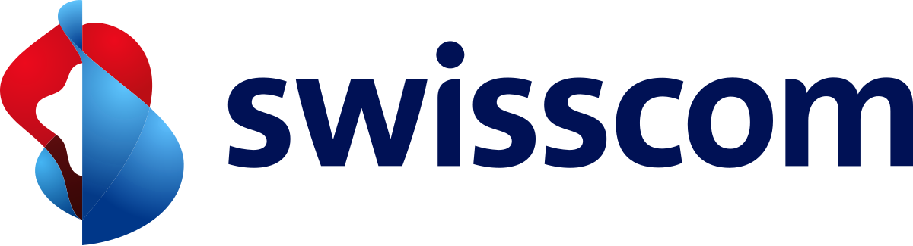
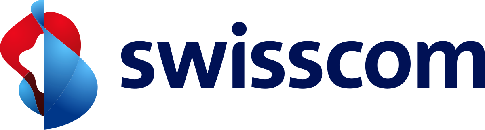

Key Projects
Technology & Infrastructure Projects
Cloud Migration & Hybrid Infrastructure
- Migrated large-scale messaging workloads to AWS/Azure/GCP hybrid environments.
- Defined resilience, scalability and cost-optimization strategies (multi-region, autoscaling, IaC).
DevOps & Continuous Delivery Transformation
- Introduced organization-wide CI/CD pipelines with automated testing and containerization.
- Improved release reliability and shortened delivery cycles across distributed teams.
Enterprise Security & Compliance
- Implemented SSO, MFA, PKI and GDPR-compliant data handling for enterprise platforms.
- Hardened services and standardized security baselines across products and clients.
AI-powered Productivity & Knowledge
- Prototyped RAG-based assistants to accelerate support, documentation and delivery tasks.
- Embedded prompt-engineering practices within product and engineering workflows.
Customer & Product Innovation
Cloud-native Webmail Platforms for Telcos – BT, Bell Canada, KDDI, Fastweb
- Microservices architecture on AWS, Azure, GCP; WCAG-compliant UX; secure-by-design.
- Agile delivery with CI/CD and cross-geo engineering teams.
Digital Transformation Initiatives
- Webmail customization for enterprise customers.
- CRM integration with user platforms.
- Platform monitoring integration & analysis.
Enterprise Messaging & Provisioning Systems
- Delegated admin, legal interception, certified email (PEC) and scalable provisioning flows.
- APIs and integrations enabling reuse across multiple Tier‑1 clients.
- Leadership & Delivery: Technical leadership, Agile team management, stakeholder engagement, mentoring, removing blockers, performance management.
- Software Development: Java (Full Stack), Node.js, React, HTML/CSS/JS, Microservices, REST APIs.
- Cloud & DevOps: AWS, Azure, Google Cloud Platform (GCP), Docker, Virtualization, Containers, Infrastructure as Code (IaC), CI/CD (Jira, Bamboo, Git, Jenkins), Monitoring & Performance Testing.
- Architecture & Security: Scalable and secure architectures, SSO, MFA, PKI, GDPR compliance, encryption (AES, 3DES).
- Testing & Quality: TDD, unit/integration testing, QA best practices, continuous quality monitoring.
- Client Management: Direct engagement, pre-sales, technical demos, solution customization, long-term account growth, bridging customer needs and technical execution.
- Product Strategy: Market-ready reusable solutions, product innovation, go-to-market support, aligning business vision with technical execution.
- AI & Emerging Tech: Generative AI, Prompt Engineering, RAG architectures, Web3 and Blockchain fundamentals, ethical AI adoption.
- Experimenting with Generative AI for project management, product innovation, and customer engagement.
- Developing skills in Prompt Engineering and LLM fine-tuning for specialized business needs.
- Exploring Retrieval-Augmented Generation (RAG) to improve enterprise knowledge management and decision-making.
- Leveraging AI in DevOps automation and cloud-native environments.
- Building awareness on ethical AI adoption, compliance, and human-centered design.
- Leadership & Teamwork: Recognized for professionalism, dedication, and the ability to manage complex projects across global stakeholders (Josh Cohen, Ronan Kelly).
- Technical Expertise: Praised for deep knowledge in software architecture, scalable APIs, and problem-solving with innovative solutions (Atul Bhatia, Jaikishan Khatwani).
- Client Engagement: Endorsed for clear communication, bridging customer requirements with technical delivery, and ensuring high-quality results (Harrison Bliss, Mike Mohammed).
- Collaboration & Mentoring: Appreciated for listening skills, ability to motivate teams, and guiding colleagues with confidence and empathy (Francesco D’Agostino, Gianluca Baragiotta, Simón de Frosterus, Patrick Gnägi).
Core Competencies
🤖 AI Enthusiast
In recent years I have deepened my knowledge of Artificial Intelligence, focusing on how to integrate AI into real-world product strategies and enterprise platforms. My journey includes:
This evolution reflects my passion for continuous learning and my commitment to applying AI responsibly to maximize value for businesses and end users.
Related Certifications
Recommendations
Throughout my career, I have received strong endorsements from colleagues, managers, and clients worldwide. Key highlights include:
You can read the full recommendations directly on my LinkedIn profile.
Customers


 
